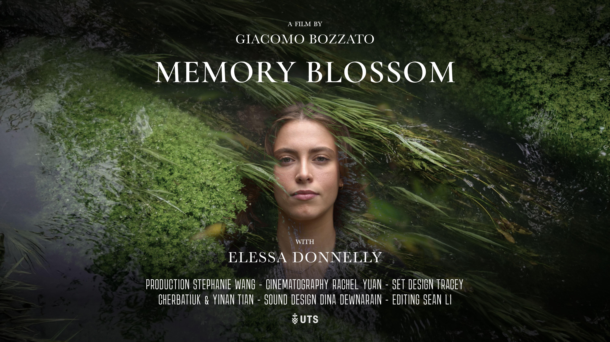

Giacomo
Bozzato
Bozzato


Hi! 👋 I'm a UI designer and photographer from Italy, now based in Sydney, focused on visual storytelling for environment-aware and purpose-driven creative projects.
Memory Blossom
filmmaking
2024
Memory Blossom is a shortfilm I wrote and directed for the course of Creative Media Production at the University of Technology of Sydney. It deals with the themes of memory, identity, nature, and rebirth. It's set in an eco-dystopian future with close-to-zero biodiversity. We follow the brief story of Ellie, a young woman who returns to her childhood house to rediscover the roots of her family. Nostalgia, sorrow, hope. This dive into her past reveals something unexpected.
